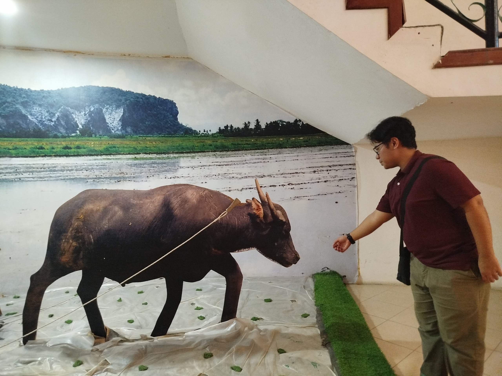

|
Home
About Me
Education
Family
My Favourites |
Who Am I?My name is Muhammad Nirman Atif bin Mohd Azrool Rizal. I am 20 years old and I live in Gerik, Perak. Believe it or not, i was born in Pahang and grew up in Kudat, Sabah. The reason for me to live in Sabah is because my father got a work offer there so our family had to move out. I am the oldest out of 3 siblings. To be completely honest, my life isn't that interesting. But at the same time, it isn't that boring either. I met a lot of wonderful people along the way and i will be forever grateful for them. |

|
My BackgroundI am currently studying in UiTM Kedah branch, pursuing a Diploma in Library Informatics. This course teaches me about cataloging, classification, metadata management, databases, library services, as well as information retrieval. |
My PersonalityIn terms of personality im not very friendly with others. Im more of a calm and collected type of person. But not being friendly does not mean I don't want to make new friends, I will always be happy when given chances to make new friends. My friends also said im a funny guy even when I am not trying to be, i guess i always got the comedian in me without myself knowing. |
 |
| © 2026 Nirman Atif. All Rights Reserved. | Best viewed on Google Chrome at 1920x1080 resolution | Last Updated: June 2026 |